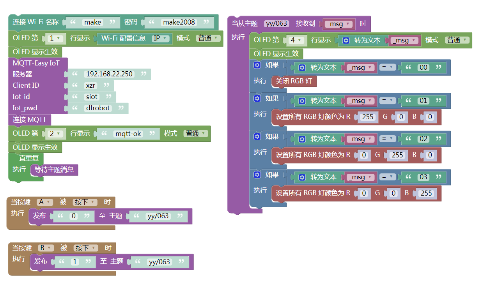
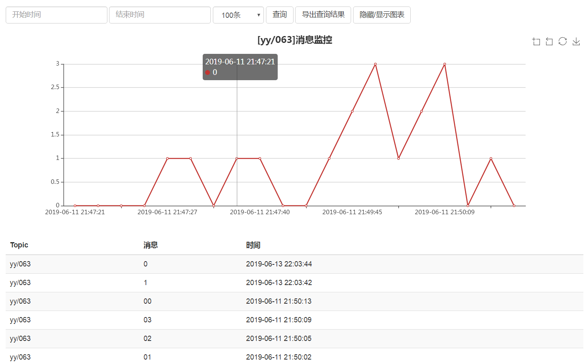
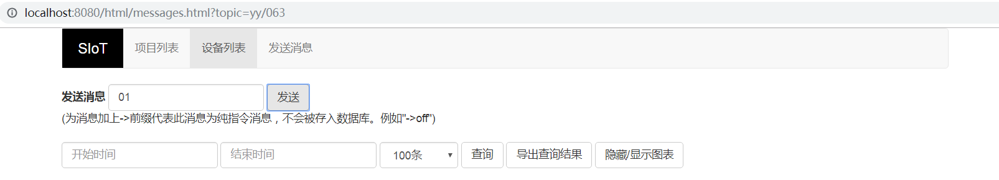

4. 快速入门¶
下面以win7系统为例，介绍以SIoT为MQTT服务器，掌控板板为智能终端，搭建一个最简单的物联网数据采集系统。

4.2. 编写程序（mPythonX）¶
打开mPythonX，编写如下代码。
说明：
请确保掌控板和电脑所处的局域网可以相互访问，最简单的方式是连接同一个无线路由器。
“mpythonx/001”表示项目名称为“mpythonx”，设备名称为“001”。
服务器地址就是运行siot的电脑的ip地址。
给掌控板写入程序并且运行。
重新启动掌控板，等屏幕显示IP地址后，如果出现“mqtt-ok”，说明SIoT服务器连接成功。
4.3. Web管理¶
打开网址：localhost:8080（或者使用电脑的IP地址）。
输入默认的用户名“siot”和密码“dfrobot”（虚谷号自带的SIoT），就可以看到项目列表中多了"yy"。
在名称为“yy”设备消息中，当按下“A”键时，在网页端就可以接收到“0”，按下“B”键，可以接收到“1”。
在名称为“yy”设备消息中，当发送“01”时，就可以控制掌控板的红灯亮；发送“02”时，就可以控制掌控板亮绿灯；发送“03”时，控制掌控板亮蓝灯；发送“00”，控制掌控板灯熄灭。
4.4. 故障排查¶
1、如果接收不到数据，请关闭运行SIoT服务器的电脑的各种病毒防火墙或者网络防火墙（安全卫士）。
2、在其他电脑使用MQTT客户端测试SIoT，推荐MqttTool（一个测试mqtt的软件，只有100k不到）。
GitHub地址：https://github.com/vvlink/SIoT/tree/master/MQTT%20tools/Mqtttool
下载地址：https://github.com/vvlink/SIoT/tree/master/MQTT%20tools/Mqtttool
3、在手机使用MQTT客户端测试SIOT。
安卓系统推荐使用MQTT Client。
iPhone系统推荐使用MQTTool，通过App Store即可安装MQTTool。
这些软件的使用，可以参考“客户端连接范例”。